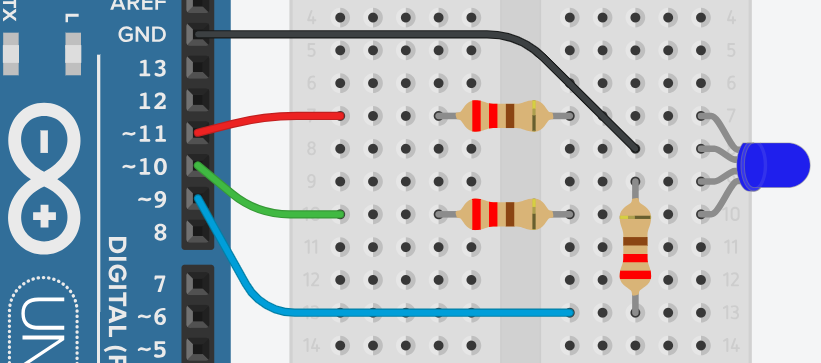

Installing the Software for the Project
For this project, we will be using Visual Studio Code with Node.js installed. VS Code displays a code editor and a file explorer usually on the left. You can use the buttons on top of the file explorer to create new files and folders.
Node.js is an open-source, server-side JavaScript runtime environment built on the Chrome V8 JavaScript engine. NPM comes bundled with Node.js installation. NPM is a package manager used for managing and distributing open-source JavaScript packages and libraries.
An alternative to NPM is Yarn. Yarn is a package manager developed
by Facebook in collaboration with other companies and the open-source community to address
some limitations of existing package managers.
- Visual Studio Code can be downloaded at http://code.visualstudio.com/.
- Node.js can be downloaded at http://nodejs.org/.
- Yarn can be downloaded using a terminal command.
- Open a terminal window with Terminal > New Terminal or View > Terminal.
npm install--globalyarn- Verify the installation with
yarn --version
Creating a Project Directory
Create a new project folder or directory. Then, create a new JavaScript file inside the directory. Name the file "rgbLED.js".
- You can also create a project folder and file using PowerShell commands.
New-Item -Path .\Project -ItemType DirectoryNew-Item -Path .\Project\rgbLED.js -ItemType File
Enter the project directory & initiate a project using the command terminal.
cd Project- Hint: Use
cd..to return to a parent directory. - Hint: Use quotations,
cd 'My Project'to enter a directory with spaces in the name. - Hint: Use
cd E:\to enter a directory in a USB drive on drive E. yarn init -y- Adding
--yesor-yto the command bypasses the prompt questions. - If using NPM, the command is
npm init --yes - A package.json file will be generated in the Project directory.
Install the necessary packages.
- Install the Johnny-Five package.
yarn add johnny-five-
- or
npm install johnny-five
- or
- Install the SerialPort package.
yarn add serialport- or
npm install serialport - Installing packages creates a package.json file and a yarn.lock.
- or package-lock.json file
The file directory should look like the file directory map shown.
Project/
├── node_modules/
├── rgbLED.js
├── package.json
└── yarn.lock or package-lock.json
Editing the JavaScript file
- Open the file rgbLED.js and add the JavaScript code as shown.
/* rgbLED.js */
const { Board, Led } = require('johnny-five');
const board = new Board();
/* Requires pins that support PWM (denoted by ~) */
const redPin = 11;
const greenPin = 10;
const bluePin = 9;
// define each color
const redHex = 'FF0000';
const yellowHex = 'FFFF00';
const greenHex = '00FF00';
const cyanHex = '00FFFF';
const blueHex = '0000FF';
const violetHex = 'FF00FF';
board.on('ready', () => {
console.log('Board is ready!');
const rgb = new Led.RGB({
pins: {
red: redPin,
green: greenPin,
blue: bluePin
},
isAnode: false // true if common anode
});
const colorWheel = [
redHex,
yellowHex,
greenHex,
cyanHex,
blueHex,
violetHex
];
let index = 0;
board.loop(1000, () => { // every 1 sec (1000 ms)
rgb.color(colorWheel[index++]);
if (index === colorWheel.length) {
index = 0;
}
});
});
Getting the Circuit Ready
Build the circuit as shown in the image using an Uno R3 Arduino Board.
This circuit uses three 220 Ω resistors, a breadboard, and jumper wires.
Uploading the Firmata sketch using Arduino IDE
The Firmata sketch allows an Arduino board to interpret JavaScript code.
- Open the Arduino IDE
- Connect your Arduino Uno board to the USB port.
- Go to "File", then "Examples", then "Firmata" and select "StandardFirmata".
- Go to "Tools", then "Board", and select "Arduino Uno".
- Go to "Tools", then "Port", and select "COM#:Arduino Uno".
- Go to "Sketch", and select "Upload" or click the arrow button.
- You can close the Arduino IDE after you upload Firmata.
Running the Script using Node.js
- Run the script using the command
node rgbLED.js. - The LED should start flacking different colors.
- Use
"ctrl"+"c"twice to stop the running the script. - Edit the
package.jsonfile script section as shown. - Start the rgbLED.js script using
yarn flash. - If using NPM, you have some options.
npm run flash
{
"name": "project",
"version": "1.0.0",
"main": "index.js",
"license": "MIT",
"dependencies": {
"johnny-five": "^2.1.0",
"serialport": "^11.0.0"
},
"scripts": {
"flash": "node rgbLED.js"
}
}